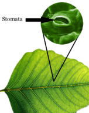

Sahara Desert in northern Africa (left). Rainforest in northeastern Australia (right). Two very different biomes are pictured here. Both are found at roughly the same distance from the equator.
These brilliant red “feathers” are actually animals called tube worms. They live in an extreme environment on the deep ocean floor, thousands of meters below the water’s surface. Their world is always very cold and completely dark. Without sunlight, photosynthesis is not possible. So what do organisms eat at these depths? Tube worms depend on chemosynthetic microorganisms that live inside them for food. In this and other ways, tube worms have adapted to the extreme conditions of their environment.
All organisms must adapt to their environment in order to survive. This is true whether they live in water or on land. Most environments are not as extreme as the deep ocean where tube worms live. But they all have conditions that require adaptations. In this chapter, you will read about a wide variety of environments and the organisms that live in them.
Ecology is the study of how living things interact with each other and with their environment. It is a major branch of biology, but has areas of overlap with geography, geology, climatology, and other sciences. This lesson introduces fundamental concepts in ecology, beginning with organisms and the environment.
Organisms are individual living things. Despite their tremendous diversity, all organisms have the same basic needs: energy and matter. These must be obtained from the environment. Therefore, organisms are not closed systems. They depend on and are influenced by their environment. The environment includes two types of factors: abiotic and biotic.
An ecosystem is a unit of nature and the focus of study in ecology. It consists of all the biotic and abiotic factors in an area and their interactions. Ecosystems can vary in size. A lake could be considered an ecosystem. So could a dead log on a forest floor. Both the lake and log contain a variety of species that interact with each other and with abiotic factors. Another example of an ecosystem is pictured in Figure below .
Desert Ecosystem. What are some of the biotic and abiotic factors in this desert ecosystem?
When it comes to energy, ecosystems are not closed. They need constant inputs of energy. Most ecosystems get energy from sunlight. A small minority get energy from chemical compounds. Unlike energy, matter is not constantly added to ecosystems. Instead, it is recycled. Water and elements such as carbon and nitrogen are used over and over again.
One of the most important concepts associated with the ecosystem is the niche. A niche refers to the role of a species in its ecosystem. It includes all the ways that the species interacts with the biotic and abiotic factors of the environment. Two important aspects of a species’ niche are the food it eats and how the food is obtained. Look at Figure below . It shows pictures of birds that occupy different niches. Each species eats a different type of food and obtains the food in a different way.
Bird Niches. Each of these species of birds has a beak that suits it for its niche. For example, the long slender beak of the nectarivore allows it to sip liquid nectar from flowers. The short sturdy beak of the granivore allows it to crush hard, tough grains.
Another aspect of a species’ niche is its habitat. The habitat is the physical environment in which a species lives and to which it is adapted. A habitat’s features are determined mainly by abiotic factors such as temperature and rainfall. These factors also influence the traits of the organisms that live there.
A given habitat may contain many different species, but each species must have a different niche. Two different species cannot occupy the same niche in the same place for very long. This is known as the competitive exclusion principle . If two species were to occupy the same niche, what do you think would happen? They would compete with one another for the same food and other resources in the environment. Eventually, one species would be likely to outcompete and replace the other.
Energy enters ecosystems in the form of sunlight or chemical compounds. Some organisms use this energy to make food. Other organisms get energy by eating the food.
Producers are organisms that produce food for themselves and other organisms. They use energy and simple inorganic molecules to make organic compounds. The stability of producers is vital to ecosystems because all organisms need organic molecules. Producers are also called autotrophs. There are two basic types of autotrophs: photoautotrophs and chemoautotrophs.
Different types of photoautotrophs are important in different ecosystems.
Consumers are organisms that depend on other organisms for food. They take in organic molecules by essentially “eating” other living things. They include all animals and fungi. (Fungi don't really “eat”; they absorb nutrients from other organisms.) They also include many bacteria and even a few plants, such as the pitcher plant in Figure below . Consumers are also called heterotrophs. Heterotrophs are classified by what they eat:
Pitcher Plant. Virtually all plants are producers. This pitcher plant is an exception. It consumes insects. It traps them in a sticky substance in its “pitcher.” Then it secretes enzymes that break down the insects and release nutrients. Which type of consumer is a pitcher plant?
When organisms die, they leave behind energy and matter in their remains. Decomposers break down the remains and other wastes and release simple inorganic molecules back to the environment. Producers can then use the molecules to make new organic compounds. The stability of decomposers is essential to every ecosystem. Decomposers are classified by the type of organic matter they break down:
Dung Beetles. These dung beetles are rolling a ball of feces to their nest to feed their young.
One of the most beloved and iconic native species within the old growth redwood forests of California is the Pacific Banana Slug. These slimy friends of the forest are the ultimate recyclers. Feeding on fallen leaves, mushrooms or even dead animals, they play a pivotal role in replenishing the soil. QUEST goes to Henry Cowell Redwoods State Park near Santa Cruz, California on a hunt to find Ariolomax dolichophallus , a bright yellow slug with a very big personality. See http://www.kqed.org/quest/television/science-on-the-spot-banana-slugs-unpeeled for more information.
Click on the image above for more content
Food chains and food webs are diagrams that represent feeding relationships. They show who eats whom. In this way, they model how energy and matter move through ecosystems.
A food chain represents a single pathway through which energy and matter flow through an ecosystem. An example is shown in Figure below . Food chains are generally simpler than what really happens in nature. Most organisms consume—and are consumed by—more than one species.
This food chain includes producers and consumers. How could you add decomposers to the food chain?
A musical summary of food chains can be heard at http://www.youtube.com/watch?v=TE6wqG4nb3M (2:46).
A food web represents multiple pathways through which energy and matter flow through an ecosystem. It includes many intersecting food chains. It demonstrates that most organisms eat, and are eaten, by more than one species. An example is shown in Figure below .
Food Web. This food web consists of several different food chains. Which organisms are producers in all of the food chains included in the food web?
The feeding positions in a food chain or web are called trophic levels . The different trophic levels are defined in Table below . Examples are also given in the table. All food chains and webs have at least two or three trophic levels. Generally, there are a maximum of four trophic levels.
| Trophic Level | Where It Gets Food | Example |
|---|---|---|
| 1st Trophic Level: Producer | Makes its own food | Plants make food |
| 2nd Trophic Level: Primary Consumer | Consumes producers | Mice eat plant seeds |
| 3rd Trophic Level: Secondary Consumer | Consumes primary consumers | Snakes eat mice |
| 4th Trophic Level: Tertiary Consumer | Consumes secondary consumers | Hawks eat snakes |
Many consumers feed at more than one trophic level. Humans, for example, are primary consumers when they eat plants such as vegetables. They are secondary consumers when they eat cows. They are tertiary consumers when they eat salmon.
Energy is passed up a food chain or web from lower to higher trophic levels. However, only about 10 percent of the energy at one level is available to the next level. This is represented by the pyramid in Figure below . What happens to the other 90 percent of energy? It is used for metabolic processes or given off to the environment as heat. This loss of energy explains why there are rarely more than four trophic levels in a food chain or web. Sometimes there may be a fifth trophic level, but usually there’s not enough energy left to support any additional levels.
Ecological Pyramid. This pyramid shows how energy and biomass decrease from lower to higher trophic levels. Assume that producers in this pyramid have 1,000,000 kilocalories of energy. How much energy is available to primary consumers?
Energy pyramids are discussed at http://www.youtube.com/watch?v=8T2nEMzk6_E&feature=related (1:44).
With less energy at higher trophic levels, there are usually fewer organisms as well. Organisms tend to be larger in size at higher trophic levels, but their smaller numbers result in less biomass. Biomass is the total mass of organisms at a trophic level. The decrease in biomass from lower to higher levels is also represented by Figure above .
1. Define biotic and abiotic factors of the environment. Give an example of each.
2. How do ecologists define the term ecosystem ?
3. State the competitive exclusion principle.
4. Identify three different types of consumers. Name an example of each type.
5. Describe the role of decomposers in food webs.
6. Draw a terrestrial food chain that includes four trophic levels. Identify the trophic level of each organism in the food chain.
7. Compare and contrast the ecosystem concepts of niche and habitat.
8. What can you infer about an ecosystem that depends on chemoautotrophs for food?
9. Explain how energy limits the number of trophic levels in a food chain or web.
In this lesson, you learned how matter is transferred through food chains and webs. Producers make food from inorganic molecules. Other organisms consume the producers. When organisms die, decomposers break down their remains and release inorganic molecules that can be used again by producers. In this way, matter is recycled by the biotic factors in ecosystems.
Where does the water come from that is needed by your cells? Or the carbon and nitrogen that is needed to make your organic molecules? Unlike energy, matter is not lost as it passes through an ecosystem. Instead, matter is recycled. This recycling involves specific interactions between the biotic and abiotic factors in an ecosystem.
The chemical elements and water that are needed by organisms continuously recycle in ecosystems. They pass through biotic and abiotic components of the biosphere. That’s why their cycles are called biogeochemical cycles . For example, a chemical might move from organisms ( bio ) to the atmosphere or ocean ( geo ) and back to organisms again. Elements or water may be held for various periods of time in different parts of a cycle.
The rest of this lesson describes three biogeochemical cycles: the water cycle, carbon cycle, and nitrogen cycle.
Water on Earth is billions of years old. However, individual water molecules keep moving through the water cycle. The water cycle is a global cycle. It takes place on, above, and below Earth’s surface, as shown in Figure below .
Like other biogeochemical cycles, there is no beginning or end to the water cycle. It just keeps repeating.
During the water cycle, water occurs in three different states: gas (water vapor), liquid (water), and solid (ice). Many processes are involved as water changes state in the water cycle.
Water changes to a gas by three different processes:

Plant leaves have many tiny stomata. They release water vapor into the air.
Rising air currents carry water vapor into the atmosphere. As the water vapor rises in the atmosphere, it cools and condenses. Condensation is the process in which water vapor changes to tiny droplets of liquid water. The water droplets may form clouds. If the droplets get big enough, they fall as precipitation —rain, snow, sleet, hail, or freezing rain. Most precipitation falls into the ocean. Eventually, this water evaporates again and repeats the water cycle. Some frozen precipitation becomes part of ice caps and glaciers. These masses of ice can store frozen water for hundreds of years or longer.
Precipitation that falls on land may flow over the surface of the ground. This water is called runoff . It may eventually flow into a body of water. Some precipitation that falls on land may soak into the ground, becoming groundwater . Groundwater may seep out of the ground at a spring or into a body of water such as the ocean. Some groundwater may be taken up by plant roots. Some may flow deeper underground to an aquifer . This is an underground layer of rock that stores water, sometimes for thousands of years.
The water cycle is demonstrated at http://www.youtube.com/watch?v=iohKd5FWZOE&feature=related (4:00).
The Water Cycle Jump can be viewed at http://www.youtube.com/watch?v=BayExatv8lE . (1:31).
We all rely on the water cycle, but how does it actually work? Scientists at University of California Berkeley are embarking on a new project to understand how global warming is affecting our fresh water supply. And they're doing it by tracking individual raindrops in Mendocino and north of Lake Tahoe. See http://www.kqed.org/quest/television/tracking-raindrops for more information.
Flowing water can slowly dissolve carbon in sedimentary rock. Most of this carbon ends up in the ocean. The deep ocean can store carbon for thousands of years or more. Sedimentary rock and the ocean are major reservoirs of stored carbon. Carbon is also stored for varying lengths of time in the atmosphere, in living organisms, and as fossil fuel deposits. These are all parts of the carbon cycle , which is shown in Figure below .
The Carbon Cycle. Carbon moves from one reservoir to another in the carbon cycle. What role do organisms play in this cycle?
The carbon cycle is discussed in the following video: http://www.youtube.com/watch?v=0Vwa6qtEih8 (1:56).
Carbon cycles quickly between organisms and the atmosphere. Cellular respiration releases carbon into the atmosphere as carbon dioxide. Photosynthesis removes carbon dioxide from the atmosphere and uses it to make organic compounds. Carbon cycles far more slowly through geological processes such as sedimentation. Carbon may be stored in sedimentary rock for millions of years.
Nitrogen makes up 78 percent of Earth’s atmosphere. It’s also an important part of living things. Nitrogen is found in proteins, nucleic acids, and chlorophyll. The nitrogen cycle moves nitrogen through the abiotic and biotic parts of ecosystems. Figure below shows how nitrogen cycles through a terrestrial ecosystem. Nitrogen passes through a similar cycle in aquatic ecosystems.
Nitrogen Cycle in a Terrestrial Ecosystem. Nitrogen cycles between the atmosphere and living things.
Plants cannot use nitrogen gas from the air to make organic compounds for themselves and other organisms. The nitrogen gas must be changed to a form called nitrates, which plants can absorb through their roots. The process of changing nitrogen gas to nitrates is called nitrogen fixation . It is carried out by nitrogen-fixing bacteria. The bacteria live in soil and roots of legumes, such as peas.
When plants and other organisms die, decomposers break down their remains. In the process, they release nitrogen in the form of ammonium ions. Nitrifying bacteria change the ammonium ions into nitrates. Some of the nitrates are used by plants. Some are changed back to nitrogen gas by denitrifying bacteria.
The nitrogen cycle is discussed at http://www.youtube.com/watch?v=pdY4I-EaqJA&feature=fvw (5:08).
1. What is a biogeochemical cycle? Name an example.
2. Identify and define two processes by which water naturally changes from a solid or liquid to a gas.
3. Define exchange pool and reservoir, and identify an example of each in the water cycle.
4. State three ways that carbon dioxide enters Earth’s atmosphere.
5. List all the ways that a single tree may be involved in the carbon cycle.
6. Assume you are a molecule of water. Describe one way you could go through the water cycle, starting as water vapor in the atmosphere.
7. Read the following passage, then apply information from the lesson to explain why the farmer plants peas:
A farmer has three fields in which she grows corn for market. Every year, she plants one of the fields with peas, even though she cannot make as much money selling peas as she can selling corn. She rotates the fields she plants with peas so that each field is planted with peas every 3 years.
8. Compare and contrast biological and geological pathways of the carbon cycle.
9. Explain why bacteria are essential parts of the nitrogen cycle.
In this lesson, you read how matter is recycled through ecosystems. Ecosystems vary in the amount of matter they can recycle. For example, rainforests can recycle more matter than deserts.
If you look at the two pictures in Figure below , you will see very few similarities. The picture on the left shows a desert in Africa. The picture on the right shows a rainforest in Australia. The desert doesn’t have any visible plants, whereas the rainforest is densely packed with trees. What explains these differences?
Sahara Desert in northern Africa (left). Rainforest in northeastern Australia (right). Two very different biomes are pictured here. Both are found at roughly the same distance from the equator.
The two pictures in Figure above represent two different biomes. A biome is a group of similar ecosystems with the same general abiotic factors and primary producers. Biomes may be terrestrial or aquatic.
Terrestrial biomes include all the land areas on Earth where organisms live. The distinguishing features of terrestrial biomes are determined mainly by climate. Terrestrial biomes include tundras, temperate forests and grasslands, chaparral, temperate and tropical deserts, and tropical forests and grasslands.
Climate is the average weather in an area over a long period of time. Weather refers to the conditions of the atmosphere from day to day. Climate is generally described in terms of temperature and moisture. Temperature falls from the equator to the poles. Therefore, major temperature zones are based on latitude. They include tropical, temperate, and arctic zones (see Figure below ). However, other factors besides latitude may also influence temperature. For example, land near the ocean may have cooler summers and warmer winters than land farther inland. This is because water gains and loses heat more slowly than does land, and the water temperature influences the temperature on the coast. Temperature also falls from lower to higher altitudes. That’s why tropical zone mountain tops may be capped with snow.
Temperature Zones. Temperature zones are based on latitude. What temperature zone do you live in?
In terms of moisture, climates can be classified as arid (dry), semi-arid, humid (wet), or semi-humid. The amount of moisture depends on both precipitation and evaporation. Precipitation increases moisture. Evaporation decreases moisture.
This diagram shows how precipitation is affected by the ocean and a mountain range.
Plants are the major producers in terrestrial biomes. They have five basic needs: air, warmth, sunlight, water, and nutrients. How well these needs are met in a given location depends on the growing season and soil quality, both of which are determined mainly by climate.
Because climate determines plant growth, it also influences the number and variety of other organisms in a terrestrial biome. Biodiversity generally increases from the poles to the equator. It is also usually greater in more humid climates. This is apparent from the desert and rainforest biomes pictured in Figure above .
Organisms evolve adaptations that help them survive in the climate of the biome where they live. For example, in biomes with arid climates, plants may have special tissues for storing water (see Figure below ). The desert animals pictured in Figure below also have adaptations for a dry climate.
Aloe Plant and Barrel Cactus. The aloe plant on the left stores water in its large, hollow leaves. The cactus plant on the right stores water in its stout, barrel-shaped stems.
Gila Monster and Kangaroo Rat. The Gila monster’s fat tail is an adaptation to its dry climate. It serves as a storage depot for water. The kangaroo rat has very efficient kidneys. They produce concentrated urine, thus reducing the amount of water lost from the body.
In biomes with cold climates, plants may adapt by becoming dormant during the coldest part of the year. Dormancy is a state in which a plant slows down cellular activities and may shed its leaves. Animals also adapt to cold temperatures. One way is with insulation in the form of fur and fat. This is how the polar bears in Figure below stay warm.
Polar Bears. Thick fur and a layer of blubber keep polar bears warm in their Arctic ecosystem. Why do you think their fur is white? Why might it be an adaptation in an Arctic biome?
Terrestrial biomes are classified by climatic factors and types of primary producers. The world map in Figure below shows where 13 major terrestrial biomes are found.
Worldwide Distribution of Terrestrial Biomes. This map shows the locations of Earth’s major terrestrial biomes.
The following figures summarize the basic features of major terrestrial biomes. Think about how its biodiversity and types of plants and animals relate to its climate. For example, why do you think there are no amphibians or reptiles in tundra biomes? (Hint: Amphibians and reptiles cannot maintain a constant body temperature. Instead, they have about the same temperature as their surroundings.)
Terrestrial organisms are generally limited by temperature and moisture. Therefore, terrestrial biomes are defined in terms of these abiotic factors. Most aquatic organisms do not have to deal with extremes of temperature or moisture. Instead, their main limiting factors are the availability of sunlight and the concentration of dissolved oxygen and nutrients in the water. These factors vary from place to place in a body of water and are used to define aquatic biomes .
In large bodies of standing water, including the ocean and lakes, the water can be divided into zones based on the amount of sunlight it receives:
These and other aquatic zones in the ocean are identified in Figure below .
The ocean is divided into many different zones, depending on distance from shore and depth of water.
Water in lakes and the ocean also varies in the amount of dissolved oxygen and nutrients it contains:
Aquatic organisms generally fall into three broad groups: plankton, nekton, and benthos. They vary in how they move and where they live.

Anglerfish. This anglerfish lives between 1000 and 4000 meters below sea level. No sunlight penetrates to this depth. The rod-like structure on its face has a glow-in-the-dark tip. It is covered with microorganisms that give off their own light. The fish wiggles the structure like a worm to attract prey. In the darkness, only the rod-like worm is visible.
Anglerfish live in the ocean. Aquatic biomes in the ocean are called marine biomes . Organisms that live in marine biomes must be adapted to the salt in the water. For example, many have organs for excreting excess salt. Two ocean zones are particularly challenging to marine organisms: the intertidal zone and the deep ocean. The intertidal zone is the narrow strip along the coastline that is covered by water at high tide and exposed to air at low tide (see Figure below ). There are plenty of nutrients and sunlight in the intertidal zone. However, the water is constantly moving in and out, and the temperature keeps changing. These conditions requires adaptations in the organisms that live there, such as the barnacles in Figure below .
These pictures show the intertidal zone of the Bay of Fundy, on the Atlantic coast in Maine. Can you identify the intertidal zone from the pictures?
Barnacles. Barnacles secrete a cement-like substance that anchors them to rocks in the intertidal zone.
Organisms that live deep in the ocean must be able to withstand extreme water pressure, very cold water, and complete darkness. However, even here, thriving communities of living things can be found. Organisms cluster around hydrothermal vents in the ocean floor. The vents release hot water containing chemicals that would be toxic to most other living things. The producers among them are single-celled chemoautotrophs. They make food using energy stored in the chemicals. The tube worms in this chapter's opening photo depend on these chemoautotrophs for food.
Freshwater biomes have water that contains little or no salt. They include standing and running freshwater biomes. Standing freshwater biomes include ponds and lakes. Lakes are generally bigger and deeper than ponds. Some of the water in lakes is in the aphotic zone where there is too little sunlight for photosynthesis. Plankton and plants (such as the duckweed in Figure below ) are the primary producers in standing freshwater biomes.
The pond on the left has a thick mat of duckweed plants. They cover the surface of the water and use sunlight for photosynthesis. The cattails on the right grow along a stream bed. They have tough, slender leaves that can withstand moving water.
Running freshwater biomes include streams and rivers. Rivers are usually larger than streams. Streams may start with runoff or water seeping out of a spring. The water runs downhill and joins other running water to become a stream. A stream may flow into a river that empties into a lake or the ocean. Running water is better able to dissolve oxygen and nutrients than standing water. However, the moving water is a challenge to many living things. Algae and plants (such as the cattails in Figure above ) are the primary producers in running water biomes.
A wetland is an area that is saturated with water or covered by water for at least one season of the year. The water may be freshwater or salt water. Wetlands are extremely important biomes for several reasons:
More than 100,000 acres of wetlands are being restored in the Northern California Bay Area, but how exactly do we know what to restore them to? Historical ecologists are recreating San Francisco Bay wetlands that existed decades ago. To learn more, see http://www.kqed.org/quest/television/view/416 .
For more than 100 years, south San Francisco Bay has been a center for industrial salt production. Now federal and state biologists are working to restore the ponds to healthy wetlands for fish and other wildlife. Salt marshes are rich habitats that provide shelter and food for many species, some of which are endangered or threatened.
See http://www.kqed.org/quest/television/from-salt-ponds-to-wetlands for additional information.
An estuary is a partly enclosed coastal body of water with one or more rivers or streams flowing into it, and with a free connection to the ocean. Estuaries can be thought of as the most biologically productive regions on Earth, with very high biodiversity. Estuaries are zones where land and sea come together, and where fresh and salt water meet.
The San Francisco Bay is one of the great estuaries of the world. See http://www.youtube.com/watch?v=clZz2OjE5n0&playnext=1&list=PL0AAA2B9B3E9F6AB3 for further information.
Click on the image above for more content
Oceans cover more than 70 percent of our planet yet they make up one of the least explored regions on Earth. Who better to unlock the mysteries of the ocean than marine animals themselves? Marine scientists have been tagging and tracking sharks, leatherback turtles and other sea life to learn more about marine ecosystems. Through the Tagging of Pacific Predators program (TOPP), scientists hope to both assess and explain the migration routes, ecosystems and diversity of our oceans’ species.
Beginning in 2000, scientists from the National Oceanic and Atmospheric Administration, Stanford University and the University of California, Santa Cruz combined to form TOPP. As part of TOPP, researchers attach satellite tags to elephant seals, white sharks, giant leatherback turtles, bluefin tuna, swordfish and other marine animals. The tags collect information, such as how deep each animal dives, the levels of ambient light (to help determine an animal’s location) and interior and exterior body temperature. Some tags also collect information about the temperature, salinity and depth of the water surrounding an animal to help scientists identify ocean currents. The tags send the data to a satellite, which in turn sends the data the scientists. They use this information to create maps of migration patterns and discover new information about different marine ecosystems. The information collected by TOPP offers rare insights into the lives of marine animals. Without TOPP, that information would otherwise remain unknown. With TOPP, scientists are developing a working knowledge of the particular migration routes animals take, as well as the locations of popular breeding grounds and the environmental dangers faced by different species. TOPP has shed light on how we can better protect the leatherback turtle and other endangered species.
See http://www.kqed.org/quest/television/tagging-pacific-predators- for more information.
Click on the image above for more content
1. What is climate? How does it differ from weather?
2. What is a rain shadow?
3. How does climate influence plant growth?
4. Identify two types of tundra and where they are found.
5. In which biome are you most likely to find grasses, zebras, and lions?
6. What is the photic zone of the ocean?
7. Compare the data for Seattle and Denver in Table below . Seattle is farther north than Denver. Why is Seattle warmer?
| City, State | Latitude (°N) | Altitude (ft above sea level) | Location (relative to ocean) | Average Low Temperature in January (°F) |
|---|---|---|---|---|
| Seattle, Washington | 48 | 429 | Coastal | 33 |
| Denver, Colorado | 41 | 5183 | Interior | 15 |
8. If you were to design a well-adapted desert animal, what adaptations would you give it to help it survive in its desert biome?
9. Explain the relationship between biodiversity and climate in terrestrial biomes.
10. Compare and contrast plankton, nekton, and benthos.
11. A developer wants to extend a golf course into a wetland. Outline environmental arguments you could make against this plan.
You read in this lesson that wetlands have high biodiversity.
Opening image courtesy of Nicolle Rager Fuller, National Science Foundation. http://www.nsf.gov/news/special_reports/sfs/popup/life_vc_tubeworms.htm . Public Domain.
Major terrestrial biomes:
{kind=link}
{kind=link}
{kind=link}
{kind=link}
){kind=link}
{kind=link}
{kind=link}
{kind=link}
{kind=link}
{kind=link}